Engineering objective
The project models a two-dimensional ramjet propulsion system at a freestream Mach number of 2.75, pressure 12.11 kPa and temperature 216.5 K. A two-ramp external-compression inlet improves total-pressure retention before a terminal normal shock. The downstream diffuser reduces flow speed for combustion, the constant-area combustor adds heat under Rayleigh-flow assumptions, and a convergent–divergent nozzle converts thermal energy into exhaust momentum.
The calculation combines shock relations, one-dimensional isentropic area–Mach relations, Rayleigh flow, geometric sizing and a momentum-based thrust estimate. MATLAB performs the angle sweep and downstream state calculations. The results are analytical/model predictions rather than measured engine-test performance.
Intake ramp optimization
To maximize total-pressure recovery, the MATLAB sweep tests first- and second-ramp angles from 0.5° to 25° in 0.1° increments, rejecting detached-shock configurations and cases in which the flow after two oblique shocks is already subsonic. The report records 54,440 feasible designs and selects 14.30° and 17.40° as the optimal deflections within this sweep.
| Variable | Reported output | Interpretation |
|---|---|---|
| θ₁ / θ₂ | 14.30° / 17.40° | Intake ramp deflections |
| β₁ / β₂ | 33.58° / 46.31° | Attached oblique shock angles |
| Mach M₂ → M₃ → M₄ | 2.1013 → 1.4360 → 0.7250 | Two oblique shocks and terminal normal shock |
| Stagnation-pressure recovery | 0.808695 | About 19.13% of total pressure is lost across intake shocks |
| Wedge lengths L₁ / L₂ | 0.3766 / 0.2388 m | Calculated geometric lengths |
Figure 2.1 · Intake total-pressure recovery contour map
The contour maps stagnation-pressure recovery over the first and second ramp angles. Its marked optimum indicates the best feasible combination within the analyzed attached-shock domain.
SOURCE: report · PDF p. 6Figure 2.2 · Intake optimization console results
The MATLAB result records the 54,440 feasible designs, optimal ramp and shock angles, shock-station Mach values and approximately 0.8087 pressure recovery.
SOURCE: report · PDF p. 6The contour plot is particularly important: it shows that the optimum is a constrained tradeoff between shock compression and total-pressure preservation, not simply the largest ramp angles.
Diffuser design and pressure rise
After the terminal normal shock, the quasi-one-dimensional isentropic diffuser reduces Mach number from 0.725 to 0.20. The model holds stagnation pressure and stagnation temperature constant, while static pressure rises from approximately 173.52 kPa to 239.44 kPa and static temperature rises from 492.21 K to 539.64 K.
| Property | Station 4 | Station 5 |
|---|---|---|
| Mach number | 0.7250 | 0.2000 |
| Static pressure | 173.52 kPa | 239.44 kPa |
| Static temperature | 492.21 K | 539.64 K |
| Stagnation pressure | 246.21 kPa (constant in ideal model) | |
| Area ratio A₅/A₄ | 2.7508 | |
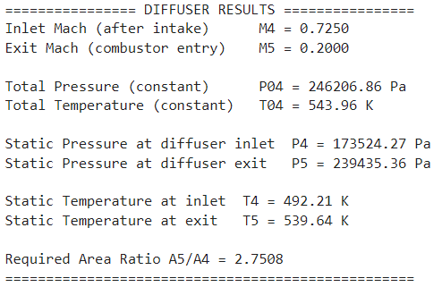
Figure 3.1 · Diffuser MATLAB results
The diffuser output reports deceleration from Mach 0.725 to Mach 0.20, static pressure rise, and area expansion A5/A4 approximately 2.7508; stagnation pressure is unchanged by the idealized model.
SOURCE: report · PDF p. 9Combustor — Rayleigh-flow analysis
The combustor is a constant-area duct with prescribed thermal energy addition. The calculation limits stagnation temperature to 2200 K and applies an extra 5% loss in stagnation pressure. The gas accelerates from Mach 0.20 to approximately 0.507, while static pressure decreases. The supplied scripts compute heat input using constant cp.
| Property | Reported value |
|---|---|
| Combustor exit Mach, M₆ | 0.5073 |
| Exit stagnation temperature | 2200 K |
| Exit stagnation pressure (with additional loss) | 210.49 kPa |
| Exit static pressure | 185.88 kPa |
| Exit static temperature | 2092.30 K |
| Heat addition per unit mass | 1663.49 kJ/kg |
Figure 4.1 · Rayleigh combustor MATLAB results
Heat addition increases stagnation temperature to 2200 K and static temperature to about 2092 K. Total pressure decreases following Rayleigh heat addition and the specified additional five-percent loss.
SOURCE: report · PDF p. 12Convergent–divergent nozzle
The ideal nozzle is sized to expand the hot gas to the freestream ambient pressure at the design point. Under that assumption, exit pressure thrust is zero and the reported net thrust comes from the axial momentum change. The exit Mach number is 2.511, at 973 K, with an exhaust speed of 1570.05 m/s.
| Quantity | Reported value |
|---|---|
| Exit Mach / exit temperature | 2.511 / 973 K |
| Exit static pressure | 12.11 kPa (ambient matched) |
| Exit velocity | 1570.05 m/s |
| Nozzle area ratio Ae/At | 2.6640 |
| Mass flow rate | 9.880 kg/s |
| Net thrust | 7498.45 N |
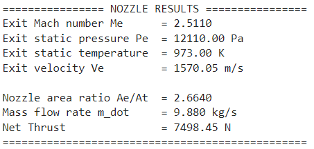
Figure 5.1 · Nozzle MATLAB results
The idealized nozzle expands the flow to the ambient pressure; the reported exit Mach number is 2.511 and the exhaust velocity is around 1570 m/s.
SOURCE: report · PDF p. 15Integrated station table and geometry
The full-system MATLAB script links the intake, diffuser, combustor and nozzle into one design-point calculation. The following table reproduces Table 6.1 (report page 17), keeping the original reported values and precision.
| Station | Mach | Static pressure (Pa) | Static temperature (K) |
|---|---|---|---|
| 1 · Freestream | 2.750 | 12,110.00 | 216.50 |
| 4 · Intake exit | 0.725 | 173,518.44 | 492.21 |
| 5 · Diffuser exit | 0.200 | 239,435.49 | 539.64 |
| 6 · Combustor exit | 0.507 | 185,876.43 | 2,092.31 |
| e · Nozzle exit | 2.511 | 12,110.00 | 973.00 |
Figure 6.1 · Integrated model geometry and combustor summary
A consolidated MATLAB output confirming the optimized intake geometry, streamwise section areas and combustor conditions.
SOURCE: report · PDF p. 18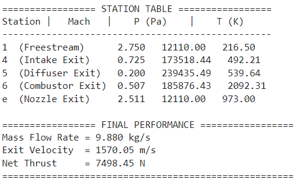
Figure 6.2 · Engine station table and thrust
The printed station properties track Mach number, pressure and temperature across intake, diffuser, combustor and nozzle, culminating in the design-point thrust estimate.
SOURCE: report · PDF p. 18Engine sizing
| Area | Value | Function |
|---|---|---|
| A₄ | 0.022720 m² | Intake exit / diffuser inlet |
| A₅ | 0.062500 m² | Diffuser exit / combustor inlet |
| A₆ | 0.062500 m² | Combustor exit |
| At | 0.054469 m² | Nozzle throat |
| Ae | 0.145106 m² | Nozzle exit |
As the flow progresses, the intake and diffuser recover static pressure, the combustor sharply increases thermal energy, and the nozzle converts a portion of that energy into exhaust kinetic energy. The following plots are newly rendered representations of the values above, not additional independent analysis.
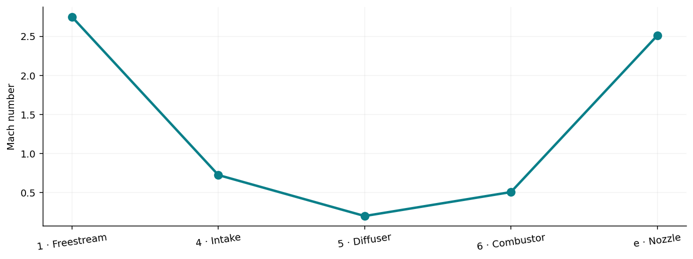
Station Mach Comparison · derived visualization
A presentation chart recreated from the numerical values in Table 6.1, page 17 of the supplied report. This is not an additional simulation run.
SOURCE: derived from report station table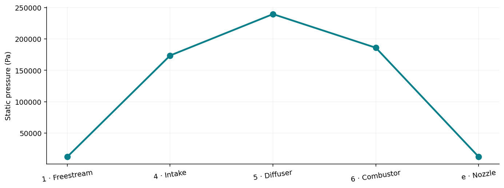
Station Pressure Comparison · derived visualization
A presentation chart recreated from the numerical values in Table 6.1, page 17 of the supplied report. This is not an additional simulation run.
SOURCE: derived from report station table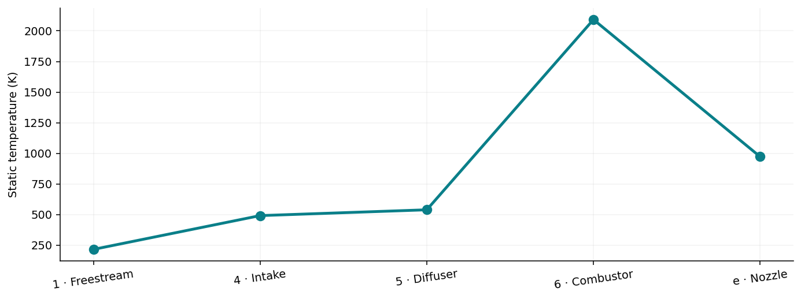
Station Temperature Comparison · derived visualization
A presentation chart recreated from the numerical values in Table 6.1, page 17 of the supplied report. This is not an additional simulation run.
SOURCE: derived from report station tableMach 2 and Mach 4 off-design cases
The bonus investigation keeps the optimized intake angles and cross-sectional areas fixed while varying incoming Mach number. At Mach 2, the design-ramp deflections imply detached shocks; the assigned attached-shock model cannot reliably continue and the report treats this case qualitatively. At Mach 4, the higher flight speed changes total-pressure recovery and causes a nozzle-to-ambient expansion mismatch.
Figure 7.1 · Off-design Mach 4 console output
The higher-Mach case retains the design-point geometry, recomputes shock and combustor conditions, and reports an off-design exhaust pressure mismatch that requires a pressure-thrust term.
SOURCE: report · PDF p. 20All supplied MATLAB result screenshots
Every image in the Results ZIP is preserved individually here, including clearer copies of plots and console outputs that also appear embedded in the report. These are grouped as supplementary execution evidence rather than repeated decorative report pages.
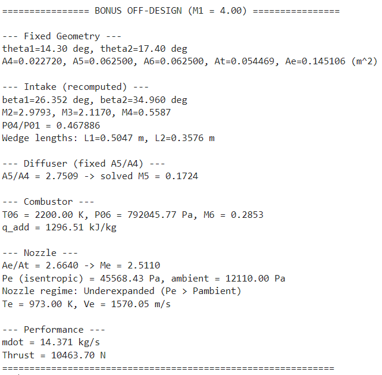
BounsM4 results
Fixed-geometry Mach 4 results: inspect intake recovery, nozzle expansion regime, mass flow and thrust. The reported value is an off-design model outcome, not a flight test.
SOURCE: results ZIP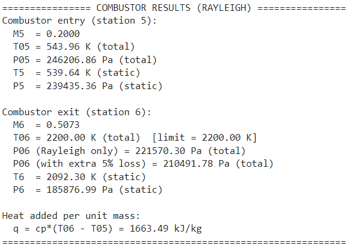
Combustor results
Original independent combustor run, displaying the Rayleigh heat-addition state and extra total-pressure correction.
SOURCE: results ZIPDiffuser results
Original independent diffuser calculation, showing the deceleration and increased static pressure.
SOURCE: results ZIP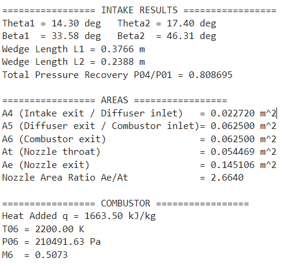
Full Code results 1
Original full-system MATLAB output including intake parameters and component geometry.
SOURCE: results ZIPFull Code results 2
Original full-system station table and design-point performance output.
SOURCE: results ZIP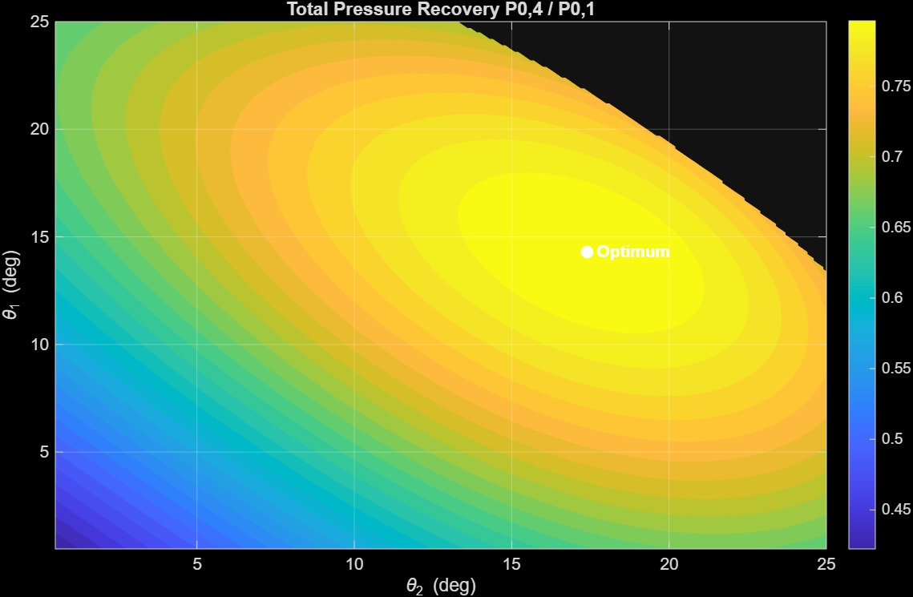
Intake Optimum Angles Map
Original higher-resolution intake pressure recovery sweep. The best combination is shown within the sampled feasible domain.
SOURCE: results ZIP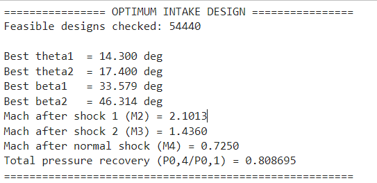
Intake results
Original intake sweep summary with best ramp angles, shock angles, Mach numbers and recovery.
SOURCE: results ZIPNozzle results
Original nozzle model output detailing exit Mach, exit velocity, expansion ratio, captured mass flow and net thrust.
SOURCE: results ZIPReport, source codes and result files
Download the original 37-page PDF, six untouched MATLAB scripts, and supplied screenshots. The scripts are provided as source code; they were not rerun in MATLAB during portfolio preparation.
Attribution and sources
Primary evidence: Design and Performance Analysis of a Supersonic Ramjet Engine, SPC 410, Fall 2025, report dated January 21, 2026; six original MATLAB files and original Results.zip. Numerical comparisons are reproduced from the report and outputs, not third-party publications.